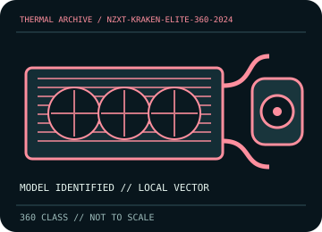

[ INDIVIDUAL COMPONENT // COOLING ]
NZXT Kraken Elite 360 (2024)
360 mm LCD AIO with a 401 × 120 × 27 mm radiator, 420 mm tubing, and internal USB control.

IDENTIFICATION: Match the complete model, regional SKU, revision, and supplied socket kit. Similar names and radiator classes do not guarantee identical brackets, dimensions, leads, or warranty terms.
Manufacturer specifications and compatibility
| Exact model / listing | NZXT Kraken Elite 360 (2024) |
|---|---|
| Radiator dimensions and thickness | 401 × 120 × 27 mm aluminum radiator; budget approximately 52 mm with a 25 mm fan stack, plus fittings. |
| Fans | 3 × 120 mm radiator fans; use the exact fan model and speed range listed on the 2024 SKU specification/download page. RGB variants use the supplied NZXT fan/control interconnect. |
| Pump / block | Pump speed 1,200–2,800 ±300 rpm; block has a 2.72-inch 640 × 640 IPS LCD. |
| Supported CPU sockets | Intel LGA 1851 / 1700 / 1200 / 115x; AMD AM5 / AM4. Match the 2024 mounting hardware to the exact kit. |
| Tube length / construction | 420 mm CIIR rubber tubing with PET braid. |
| Power, fan, lighting, and display connectors | SATA power and internal USB 2.0 (9-pin) for the LCD/controller; pump tach lead; NZXT proprietary 8-pin fan connection on the RGB bundle. Use the supplied harness and do not force incompatible third-party connectors. |
| Warranty | NZXT lists a 6-year limited warranty for the 2024 Kraken Elite; confirm region, serial, and purchase proof under current terms. |
| Case compatibility | Requires 360 mm radiator support; allow about 52 mm for radiator/fan stack and additional room for fittings, the 420 mm tube run, and LCD block. Check chassis tray, RAM, VRM and GPU clearances. |
| Motherboard compatibility | Listed Intel/AMD sockets must match the included mount. Internal USB 2.0 and SATA power are required for controller/display operation; verify motherboard header availability and cable routing. |
Warranty, maintenance, and safe installation
Sealed AIO—do not open or refill. Disconnect power and prevent fan overspin while cleaning. Inspect hose sleeves and fittings and stop operation if leakage, pump noise, display/controller faults, or abnormal temperatures occur.
- Install only with the model-specific manual and included retention hardware. Do not operate a pump dry or allow tubes to kink or rub against sharp edges.
- After installation, verify pump and fan tachometer/control operation and monitor CPU temperature under a repeatable load before normal service.
- Warranty statements are a reference, not a substitute for current regional terms; preserve the serial number and purchase record and contact the manufacturer for service.
Manufacturer sources
- NZXT — Kraken Elite (2024) specificationsManufacturer radiator, pump, LCD, tube, socket, and connection specifications.
- NZXT — Kraken Elite (2024) downloads and manualManufacturer model-specific manuals, setup, and downloads.
Static catalog reference only. Verify the precise SKU, manual revision, and current local warranty documentation before installation.